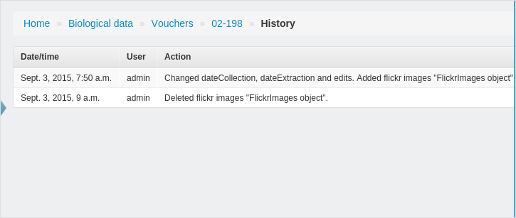
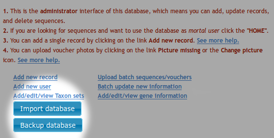

Welcome to VoSeq, a database to store voucher and DNA sequence data for phylogenetic analysis. It’s a unique database that enables to digitize biological data of museum specimens and molecular data such as DNA sequences, primers and genes.
VoSeq has tools that facilitate the batch upload of lots of voucher data and DNA sequences with a few clicks. It also has BLAST capabilities, meaning that you can find out whether one particular DNA sequence is most similar to other sequence in NCBI GenBank. You can also BLAST your sequence against all others in your VoSeq database (see BLAST plugin section for details).
VoSeq is written mainly in PHP. It uses MySQL as back-end and it is designed to run in a local server (for example by installing Apache on your computer) or to run on any commercial server service.


If you think VoSeq is useful and you happen to use it during your work, it would be great if you cite us as a source:
If you need help regarding installation or usage of th application, please contact Carlos Peña or Tobias Malm.
You can also subscribe to VoSeq’s discussion list on Google Groups.
Once you have successfully downloaded VoSeq, you can find out how to:
Before installing VoSeq, you need to install in your computer a web server (such as Apache) and the relational database MySQL.
Web server with PHP 5.0 or higher (http://www.php.net/manual/install.unix.php). Compile it with the library CURL, which is needed to do BLASTs against GenBank.
- Apache HTTP Server
- PHP
A MySQL server 5.0 or higher (see http://www.mysql.com)
GD library
Note
These instructions assume that your are using Linux and Apache, and have installed LAMP (Linux, Apache, MySQL and PHP on your computer).
We have successfully installed VoSeq in a MacBook OS X Lion. It appears that the Mac operative systems come already with Apache and PHP installed. However you will need to enable Apache to read and run PHP files.
Edit Apache’s configuration text file:
- sudo nano /etc/apache2/httpd.conf
Make sure that the line: LoadModule php5_module libexec/apache2/libphp5.so is in the file and it is not commented (there is no # symbol at the beginning of the line).
Find the section <IfModule mime_module> and write the following line AddType application/x-httpd-php .php so that Apache will run any file with the extension .php as a script and will not show it as plain text.
Unfortunately Mac OS X systems don’t come with MySQL installed. You can download it from here:
Download MySQL from here: http://dev.mysql.com/downloads/mysql/5.1.html
- Download the .dmg package according to your systems specifications (32 bits or 64 bits).
You might also want to install MySQL GUI Tools http://dev.mysql.com/downloads/gui-tools/5.0.html
The following is a quick guide to installling MySQL on your computer. It is not comprehensive and you will find much more info in the documentation for installing MySQL here: http://dev.mysql.com/doc/mysql-macosx-excerpt/5.5/en/index.html
Unpack and install both pieces of software. Make sure you install the package, in my case, mysql-5.1.60-osx10.6-x86_64.pkg and MySQLStartupitem.pkg
Start the MySQL server by typing in the terminal: sudo /Library/StartupItems/MySQLCOM/MySQLCOM start
Create a password for the user root by typing: /usr/local/mysql/bin/mysqladmin -uroot password 'myownpassword'
To start Apache, go to System Preferences>Sharing> and tick Web Sharing to start your web server. Your assigned folder to host your webpages and VoSeq installation is the folder Sites in your Home directory: /Users/YourName/Sites. You will need to place there the source files of VoSeq_X.Y.Z.zip
You need to click the button “create personal share folder” to create the folder “Sites”.
Open a Terminal: go to Applications>Utilities>Terminal. In the Terminal window, type cd ~/Sites to go to the folder where the file Voseq_X.Y.Z.zip should be.
Unpack the contents by typing unzip VoSeq_X.Y.Z.zip
Start the MySQL server: sudo /Library/StartupItems/MySQLCOM/MySQLCOM start
Go to your web browser and point it to the VoSeq installation directory: http://localhost/~YourName/VoSeq. It will direct you to the config script. Fill out the forms.
If all goes well, the installer will create a configuration file named conf.php in your VoSeq installation directory. This file will contain all the important variables and information needed to run VoSeq in your system.
If during installation, VoSeq cannot connect to MySQL server, you might need to modify your /usr/local/mysql/support-files/my-large.cnf file parameters:
- Modify the lines /var/mysqld/mysqld.sock to this /tmp/mysql.sock
- Save the file as /etc/my.cnf
Follow these instructions to install Apache, PHP and MySQL and lastly VoSeq on Windows 7 / Vista / XP systems - its not as hard as it looks!
Note
Notice that Apache will want to use port 0.0.0.0:80, which may be used by other programs, if Apache doesnt start (may say something about port occupied), write netstat -nab in Terminal and check if some other process is using that adress - then close that process if appropriate.
Download “PHP 5.x.zip” (tested on version 5.2.17) http://windows.php.net/download/. We recommend that you download the VC6 Thread Safe version if using Apache. Unpack the PHP5.x.zip file to a folder named PHP (ex. C:\PHP or C:\Program Files\PHP). Then copy the php.ini-??? to C:\WINDOWS and rename it php.ini. (??? can be dist, production or development).
Open the apache configuration file httpd.conf in a text editor (found in the C:\Program Files\Apache Software Foundation\Apache2.2\conf folder after standard install).
Add the following 4 lines at the end of the LoadModule section (now assuming php installed to C:\PHP otherwise change this to correct installation folder):
LoadModule php5_module "c:/PHP/php5apache2_2.dll"
AddHandler application/x-httpd-php .php
# configure the path to php.ini
PHPIniDir "c:/windows"
Add a file called info.php containing <?php phpinfo();?> to the C:\Program Files\Apache Software Foundation\Apache2.2\htdocs folder.
Restart your Apache Server to confirm changes: “Start > All Programs > Apache HTTP Server 4.2.4 > Control Apache Server > Restart”.
Open up your web browser and type in: http://localhost/info.php. If you get a page with blue tables containing PHP and Apache info, then installation is successful!
Finish installing PHP by modifying your PHP Configuration File (C:\WINDOWS\php.ini) in a text editor:
Find the line containing: (Delete the “;” at the beginning of the lines)
- ;extension_dir = "./" and change it to
- extension_dir = "C:\php\ext"
and the line containing:
- ;session.save_path = "/tmp"” and change it to
- session.save_path = "C:\WINDOWS\temp"
Curl is needed to get the Flickr plugin to work and enable VoSeq to interact with other databases.
Download and install MySQL (tested on 5.5) from http://dev.mysql.com/downloads/mysql/ with typical install - check the “skip Sign-Up” and ‘“Configure the MySQL server now” boxes when they arrive. Finish installation.
The MySQL Server Instance Configuration Wizard should appear.
- Click “next” ->
- Select “Detailed Configuraton” and click “next” ->
- Select “Developer Machine” and click “next” ->
- Select “Multifunctional Database” and click “next” -> click “next” ->
- Select “Decision support (DSS)/OLAP” and click “next” ->
- Check “Enable TCP/IP Networking”
- “Port Number” should be set to “3306” and
- Check “Enable strict mode”, click “next” ->
- Select “Standard Character Set” and click “next” ->
- Check “Install As Windows Service, set the name to “MySQL” and check “Launch the MySQL Server automatically
- Make sure that the “Include Bin Directory in Windows Path” is NOT checked.
- Click “Next”. -> Check the box that says “Modify Security Settings”.
- Enter a password for the default “root” account, and confirm the password in the box below.
- Do NOT check the boxes “Enable root access from remote machines” or “Create An Anonymous Account”.
- Click “Next” -> Click “Execute” and let it finish.
- Click “Finish”. Now MySQL should be installed.
To enable PHP to use the MySQL databases, open the php.ini (C:/WINDOWS/php.ini) file in your text editor and find the line ;extension=php_mysql.dll. Delete the “;” at the beginning of the line and save the file.
Add the PHP directory to Windows PATH - To do this, click:
- Start > My Computer > Properties > Advanced > Environment Variables.
- Under the second list (System Variables), there will be a variable called “Path”.
- Select it and click “Edit”. Add “;C:\php” (or your own path to PHP if installed as other) to the very end of the string and click “OK”.
Restart your computer and try out the database.
(Optional) In order to easily makes changes or additions in your database download and try out the MySQL Workbench
Download and unzip the file Voseq_VersionNumber.zip in the Apache folder (rename the new folder if necessary):
- C:\Program Files\Apache Software Foundation\Apache2.2\htdocs
Point your web browser to the address (that is - localhost + the name of your VoSeq folder): http://localhost/VoSeq_VersionNumber and follow the instructions for installing the software.
If all goes well, the installer will create a configuration file named conf.php in your VoSeq installation directory. This file will contain all the important variables and information needed to run VoSeq in your system.
If you dont want to install Apache, MySQL and PHP manually you may want to try using a 3-rd party installer. XAMPP installs all three as well as the extra protocols needed for PHP.
You can download XAMPP installer at http://www.apachefriends.org/en/xampp.html Then install it with the installer (tested with version 1.8.1). With XAMPP MySQL is installed without password, for security you need to create a new password for MySQL (as well as for the XAMPP web directory which by default is accessible for everyone that know your IP adress, though you may still be somewhat protected behind a router (read here).
Download and unzip the file Voseq_VersionNumber.zip in the XAMPP/htdocs directory (rename the new folder if necessary):
- C:\XAMPP\htdocs
Point your web browser to the address (that is - localhost + the name of your VoSeq folder): http://localhost/VoSeq_VersionNumber and follow the instructions for installing the software.
If all goes well, the installer will create a configuration file named conf.php in your myVoSeq installation directory. This file will contain all the important variables and information needed to run VoSeq in your system.
Configuration files after XAMPP install can be seen XAMPP config.
Note
This has only been tested quickly, and may not work for all computer systems!
- We welcome all feedback for this type of installation!
If you already have MySQL install XAMPP SHOULD not overwrite your existing databases, but precaution is a virtue (or something...) and we advice making backups of stored data before installation. (We can not be held responsible for any loss of data)
More information regarding XAMPP for windows is found here: http://www.apachefriends.org/en/xampp-windows.html

Here is a quick overview on how to use VoSeq with your data.
After successful installation, the first thing to do is to add records (vouchers, or specimens). You can add a single record by going to the Administrator interface and clicking on the link Add new record.

The most important information to enter is the code of voucher, which has to be unique. VoSeq will refuse to accept duplicate codes and will issue error message if this happens. Another necessary field is the Genus entry, while all other fields are optional.
You can also upload a batch of records using the tool Upload batch sequences/vouchers. You will be shown a page to batch-upload sequences. By clicking the button Upload vouchers instead you will see instructions on how to upload specimen data. You can quickly import voucher data from a table in MS Excel by copying and pasting into the text area, provided that you use the right field headers.

The second thing after adding vouchers that should be done is to create new genes or “alignments” for your database. This must be done in order to be able to add sequences to the database. You can add a single record by going to the Administrator interface and clicking on the link Add/edit/view gene information, followed by Add gene‘.

The most important and the only field that is obligatory is the gene code field, this will be the name of your gene when using the database. This could be a simple short version (e.g. COI for Cytochrome oxidase I) or any other name (no spaces allowed, but _ are ok). You can for example create a gene code for aligned data, say the barcode version of COI of 658 bp could be named COI_658 or similar. Other genecodes could be made for unaligned sequences (e.g. COI_raw).
First the gene/alignment have to be specified if aligned or not. For example may raw sequences be set to no (and these may be retrieved as FASTA-files, whereas if you want to build other datasets (Nexus, PHYLIP, TNT) they need to be set to aligned. If set to no, then other information regarding reading frames and such will be ignored!
Then (if aligned) you should include the length of an aligned gene - this will be used for dataset creation and will there warn for sequences longer than the specified length.
You may also add a description for the gene - these should be the full name of the gene (e.g. Cytochrome oxidase I) - as this field is used for example in creating tables to submit to GenBank.
Aligned genes may be set as protein-coding for additional prot-coding gene functionality when retrieveing datasets for example (e.g. position choices, translation).
For aligned protein coding (=yes) genes you may choose to specify the reading frame as well as the genetic code for translation - this will be used for dataset creation and is a must f you want to partition your genes according to codon positions or amino acids.
Introns may be added - enter number of introns in your alignment and click ‘update introns’, that will give new fields for entering starting and finsihing positions for your introns. (Remember that positions in an alignment here is counted from 1 and upwards).
In the Administrator interface, the tool Upload batch sequences/vouchers allows you to upload DNA sequences into VoSeq. Along with the DNA sequences, you have to upload the required fields gene code and voucher code, optionalyl the primer names, laborator and creation date. Each sequence and its related data goes into one line, with fields separated by tabs. If you have your data in a spreadsheet such as MS Excel, you can copy and paste the data into the text area.
(Aligned sequences should for best use of the database have missing data coded as questionmark (?) and gaps as a dash (-))

Taxonsets is a way to make a list of taxa that are being used for a specific project or analysis. A Taxonset is just a list of voucher codes. By having Taxonsets, you can quickly create datasets and tables for them.
If you have not set Taxonsets you will need to type specimen codes everytime you create a dataset. Instead, if you have a Taxonset for a particular project, you could select it when creating Tables for manuscripts.
Go to the Administrator interface and click on the link Add/edit/view Taxon sets.
A taxonset must have a name in order to be saved and usable later!
You can create a Taxonset by entering a list of specimen codes, each separated by a return:

Or by browsing the data in VoSeq and choosing the specimens you are interested in by marking them in the X field:

Here you can sort the table according to choosen information (taxonomic level, code, X-marked or not), as well as choose genes to display information of. If you have choosen one or several genes, you can sort the table according to sequence availability for selected genes. You can also press mark all or unmark all to add or remove X’s to or from each taxa that are displayed (works well with filtering). In order to perform a filtering or after selection of a new genecode you must press Sort/Filter to proceed. Your already marked taxa will be remembered.
After completing your selection of taxa and adding name and descriptions - press the Add dataset button to save it. If you are updating an already existing taxonset - press Update taxon set.
We believe that one of VoSeq’s important features is the capability to create dataset files of molecular sequences that are ready-to-run in phylogenetic software such as MrBayes, TNT, PAUP, RaXML, etc.
Now that you have voucher and sequence data in your installation of VoSeq, you might want to create datasets for analysis of sequences in phylogenetic software.
In the user interface, you will find under the Tools section the link Create new dataset. You will be shown a page to select the sequences you want by entering the voucher codes and gene codes. You can select your data to be in several formats (FASTA, NEXUS, etc), choose between codon positions, as well as choosing what information your taxon names should include.
This will create a ready-to-use data set for analyses!

The Outgroup field, if needed, should include the voucher code for the chosen outgroup taxa.
You can also chose to omit taxa from a taxonset that contains less than a specific number sequences. Say you have a 10 gene data set and want to remove all taxa with 5 or less! Easy! Just eneter a minimum number of genes!
If you have introns in your alignment you can choose to include or remove them from the output data set. If included they will be treated as separate data blocks and partitions for the Nexus and PHYLIP outputs!
The voucher codes can be entered one by one (separated by return) in the text area or you could create a Create taxonset (a list of voucher codes for a specific project).
Note
As of version 1.5.0, protein-coding ability, aligned or not, introns and genetic code will be set for each gene/alignment in the admin gene section!
You can search for records by queries using single fields or any combination of them. The autocomplete dropboxes will help you query existing data easily. This can be done in both the user interface and the administrator interface - where the latter have more options to search (e.g. record history).

In the Administrator interface you will see that some records have the link Picture missing. By clicking on this link, you will be able to upload a photo for that voucher.

If you want to replace an existing picture with another, you will need to click the Change picture icon.
After you upload your photo, VoSeq will automatically post the picture in Flickr and save the necessary URL addresses in the MySQL database. Thus, you will see your photo in the corresponding voucher page.
If you have not enabled the Flickr plugin, VoSeq will instruct you how to do this.
If you don’t want to use Flickr, you can host your photos locally on your own server or computer. For this you will need to edit a line in your conf.php file:
Change the line:
- $photos_repository = 'flickr'; to this one:
- $photos_repository = 'local';
Starting with version 1.5.0, VoSeq can host many photos for each voucher. Photos can be added in the voucher page using the administrator interface of VoSeq. You can delete photos individually by clicking on it’s “trash” icon.
Note
If you have more than two photos for voucher, all additional photos will appear at the bottom of the voucher page (see image below).

You can create a MS Excel table with specimen codes, genus and species names, genes used in analysis along with their accession numbers.
Go to the User interface and under the Toolbox click on the link Create MS Excel table
Instead of typing your specimen codes in the text area below, you could select a Taxonset (provided that it has been set before (Create taxonset). This table will be ready to attach to a manuscript for publication.
You can also change the way sequence information is displayed in the table by choosing between number of bases (displays number of bases - does not count questionmarks ?), accession numbers (displays stored accession numbers instead of sequence length) or X/- (displays X if sequence is present and - if sequence is missing.
Display missing sequence beginnings/ends with star(*)?: will show search for questionmarks (?) in the beginning or end of the sequences (when displayed by number of bases) and show if the sequence misses bases in those positions with an asterisk (*). Easy then to see during laboratory phase then where sequence information might be missing for your taxa.
You may also change between comma (,) and tab-delimited table mode.

When you click on the code of an already existing voucher in the administrator interface you will be transferred to it’s voucher information page.
Here you may make changes to all the fields - and these will be updated after pressing Update record.
A changed voucher code will automaticly change the code in the connected fields for sequences and primer informations, so as to keep them connected.
There is also a record history displayed for administrators that list what changes have been made to the voucher information previously, with time and the user responsible for the changes.
The easiest way to update VoSeq (that does not require new install of software or database):
Download the new files from github.
- Unpack the new files to your webserver directory (htdocs, webserver, etc).
- Rename your old “in use” VoSeq folder something like, ‘VoSeq_old’ or similar (e.g. “VoSeq-1.4.4” -> “VoSeq_1.4.4_old”).
- Give the newly downloaded VoSeq folder the same name as the old one had (e.g. “VoSeq-1.4.4”).
- Copy the file “conf.php” (in main folder) from the old version (e.g. “VoSeq_1.4.4_old”) to the new version (e.g. “VoSeq_1.4.4”).
Also:
If you have used and installed blast files, make sure to copy the files Blastdb_aliastool, Blast, Makeblastdb and Makembindex (.exe for all in windows), from the old version (blast/bin folder) to the new version (same folder). Then set permissions to read, write, and execute on the folder “blast/bin” and its content, as well as the folder “include/blast” (e.g. chmod 777 -R path_to/~VoSeq_folder/blast/bin) .
- For Mac users it may work better to use the sudo chown -R _www VoSeq_folder command instead, since files belong to user instead of root!
If you have voucher photos stored, transfer them from the old one to the new one also (in pictures folder).
You can make backup copies of your data by using a button in the administrator interface. You will get all your voucher info and sequences into a SQL file. If your server dies you can easily restore your database by importing one of your backups using the Import database button.
VoSeq is able to interact with Yahoo! Maps to create on-the-fly maps for vouchers when geographic coordinates are present in voucher pages. After installing VoSeq, you can enable this capability by getting a Yahoo! Maps API key from them and writing them in your conf.php file:
Get an API key from http://developer.yahoo.com/maps/simple/
After filling in the required information you will be given a Consumer Key consisting of a long string of seemingly random characters that end with two dashes:
- MwRGV2Jm1zbWNHbmnM9Y2Q9WVdrOVVHdj0yzlNQS0tJ9uc3VtZXJzZWNyZXQmeD1iMw--
Remove the two dashes from the end and copy your key into the conf.php file as a value for the variable $yahoo_key. Like the example below, including quotations and semicolon:
- $yahoo_key = "MwRGV2Jm1zbWNHbmnM9Y2Q9WVdrOVVHdj0yzlNQS0tJ9uc3VtZXJzZWNyZXQmeD1iMw";
Save the file and exit.
After doing this, VoSeq will be able to pull maps from Yahoo! whenever there is geographic information in your database. Note that you need to enter the geographic coordinates into VoSeq converted into decimal format, using the sign minus for the Southern and Western hemispheres.
VoSeq hosts all the specimen photos in Flickr. If you have a free account you can host up to 200 photos. The Pro account allows you hosting unlimited number of photos for a yearly fee (25 USD).
You need to get an API key from Flickr.
Create and account in Flickr (if you don’t own one already)
Follow the instructions to get an API key, Secret key and Token key.
After submitting you will get your Key, Secret and Token. Write down those keys.
From a text editor software, edit the file conf.php by copying your keys in it.
For example [these are not real keys and will not work if you use them]:
- $flickr_api_key = "2d7f59f9aaa2d5c0a2782d7f5d9083a6";
- $flickr_api_secret = "ef0def0f3d5f3f15f1";
- $flickr_api_token = "61607157718372495-f5524ead33b43129";
Save and exit.
Thus, every picture that you upload into your VoSeq installation will be uploaded into your Flickr account.
Note
You can share your voucher photos with the Encyclopedia or Life. Sharing Photos with EOL
VoSeq has BLAST capabilities.
You can search for homologous sequences of your markers in GenBank. If you have a VoSeq installation in your work computer (or your server provider allows you to run the BLAST executable files), you do local BLASTs. For example, BLAST any or your sequences against all sequences of the same gene, or against all your sequences (full BLAST). Click on the “BLAST” icons in your voucher’s pages:

You can also copy and paste any new sequence into VoSeq’s Blast new sequence tool and see whether there are any similar sequence in your data (this tool is located on the sidebar on the right).
Remember that you need to download from NCBI the stand alone BLAST executable files and copy/install them in one of VoSeq’s folders:
In Mac OS X: when you install from the .DMG package, the executable files will be written in the folder: /usr/local/ncbi/blast/bin. You just need to copy them to the right folder in VoSeq:
- mkdir ~/Sites/VoSeq/blast/bin
- cp /usr/local/ncbi/blast/bin/* ~/Sites/VoSeq/blast/bin/.
In Linux: /path/to/your/VoSeq/blast/bin/
In Windows: C:\Program Files\Apache Software Foundation\Apache2.2\htdocs\VoSeq\blast\bin\
It is important that the executable files are placed inside the folder bin.

VoSeq makes it easy to share your voucher photos with EOL. You can submit your best photos to EOL from VoSeq with just one click.
If you haven’t done it already, you need to create an account in Flickr. Then log in to Flickr with your account and join the EOL group:
Be aware that EOL requires that your photo is under any of the following licenses:
In your VoSeq installation, you will see a button:

under your voucher photos. If you click this button, VoSeq will add a “machine tag” to the corresponding page in Flickr so that in can be harvested by EOL.
Thus you will be able to see your photo in EOL’s pool of photos in their Flickr account http://www.flickr.com/groups/encyclopedia_of_life/pool/with/4096153224/
EOL harvests the photos quite frequently, so in one day or two, you will be able to find your photo in the respective page in EOL.


Q.- During installation I get the error 2002: “Can’t connect to local MySQL server through socket ....bla bla bla...”
VoSeq is trying to connect to MySQL using a file called socket. This error occurs when PHP tells VoSeq to find the socket in a folder where it is not placed. This can be fixed by telling MySQL to put the socket as the file /tmp/mysql.sock and by telling PHP to find it there and not to look for it in any other folder.
From the installation folder of PHP, save the file php.ini-development in the folder /usr/local/lib/ and name it php.ini
Edit your file php.ini and look for the command mysql.default_socket and make sure it says:
- mysql.default_socket = /tmp/mysql.sock
Edit your MySQL installation file /usr/local/mysql/support-files/my-large.cnf:
- File parameters: modify the lines socket = /var/mysqld/mysqld.sock to socket = /tmp/mysql.sock
- Save the file as /etc/my.cnf and /etc/mysql/my.cnf
Restart the server and resume the installation of VoSeq.
Q.- ...my computer complains that “The requested resource /VoSeq_XXX/somefile.php does not allow request data with POST requests, or the amount of data provided in the request exceeds the capacity limit.”?
A.- Open the PHP config file (see below “How to find PHP.ini”) and increase the value for POST_max_size, save file and restart webserver.
Q.- ...my computer stops a VoSeq page from running due to execution timeout?
A.- Open the PHP config file (see below “How to find PHP.ini”) and increase the value for max_execution_time, save file and restart webserver.
Q.- ...my huge taxonsets or other lists doesnt include all the values I had marked and added for them?
A.- PHP may have set a too low value to max_input_vars. Open the PHP config file (see below “How to find PHP.ini”) and increase the value for max_input_vars, save file and restart webserver.
Q.- ...if for example BLAST, storing pictures etc dont work on Mac!
A.- It happens specially when upgrading VoSeq. When you download a fresh copy of VoSeq form Github and copy the contents on your installation of VoSeq, it happens that all the files and folders have you as owner. So, VoSeq (and the Apache server) cannot write into the folders. To fix this it is necessary to set the Apache server as the owner of files and folder. In my MacBook the id for the Apache “user” is _www. So we need to do the following to transfer ownership of files and folders of VoSeq to the server: Open a terminal or console and use the command: sudo chown -R _www VoSeq_folder. This should give the permissions to VoSeq (actually the Apache server) to do this things!
Place a file named info.php containing <?php phpinfo(); ?> in your web server folder where you have your VoSeq folder. Open your browser and go to that file/page (ie. http://localhost/info.php for win/linux or http://127.0.0.1/~yourprivatefoldername/info.php for mac). This should get you the PHP config output, where you can find “Configuration File(php.ini) Path” and “Loaded Configuration File”. These fields should tell you where your config file (php.ini) is located. If these says “(none)” see below.
- Windows - In windows the PHP configuration file (php.ini) should be found under C:Windows/. If it’s not there then copy the php.ini-??? to C:\WINDOWS and rename it php.ini. (??? can be dist, production or development).
- Mac - on mac the the PHP configuration file (php.ini) should be found under /private/etc/ . If no php.ini is found there but a php.ini.default is, run sudo cp /private/etc/php.ini.default /private/etc/php.ini in terminal create a php.ini file. Then restart server.
- Linux - Open a terminal or console and type locate php.ini. In my server I got this location: /usr/local/lib/php.ini